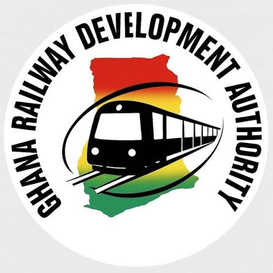

GHANA RAILWAY DEVELOPMENT AUTHORITY

WESTERN CORRIDOR
Railway Route
Simulation
TAKORADI
HAMILE
Preparing simulation
0%
GHANA RAILWAY DEVELOPMENT AUTHORITY
Western Railway Corridor
LIVE ROUTE
✓
JOURNEY COMPLETE
Western Corridor
Arrival confirmed at
Hamile
↻
Run journey again